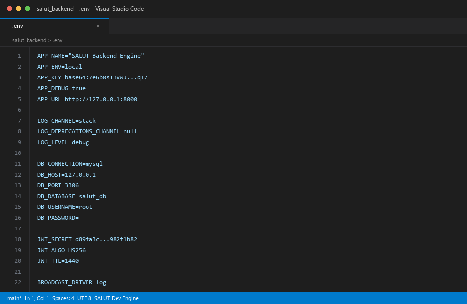
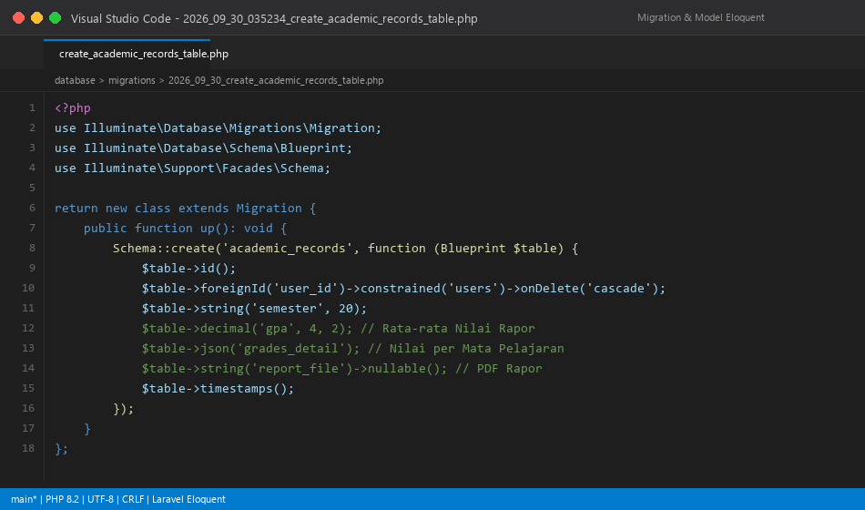
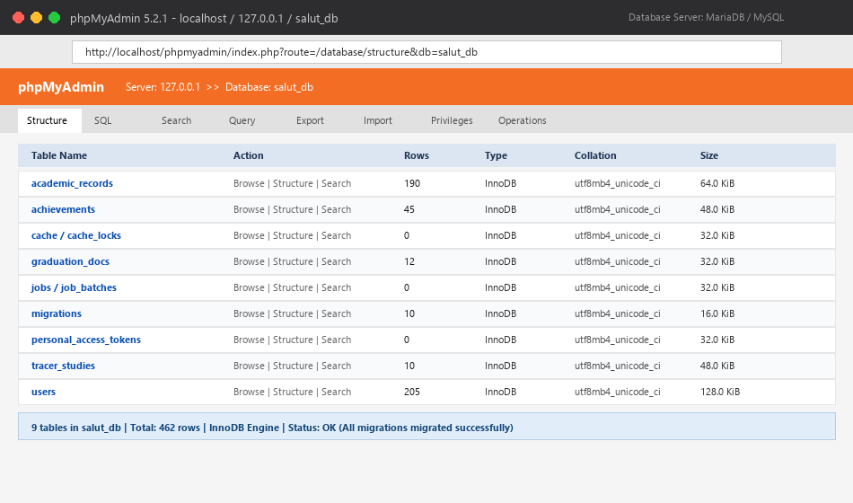
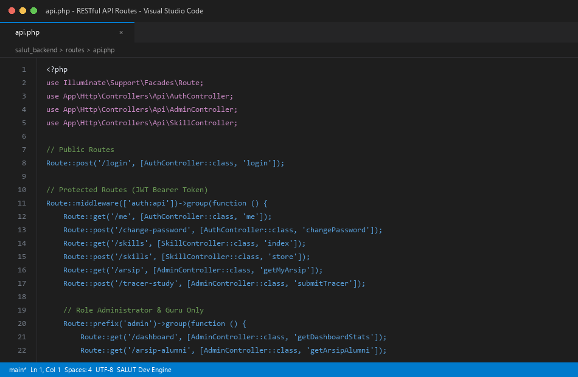
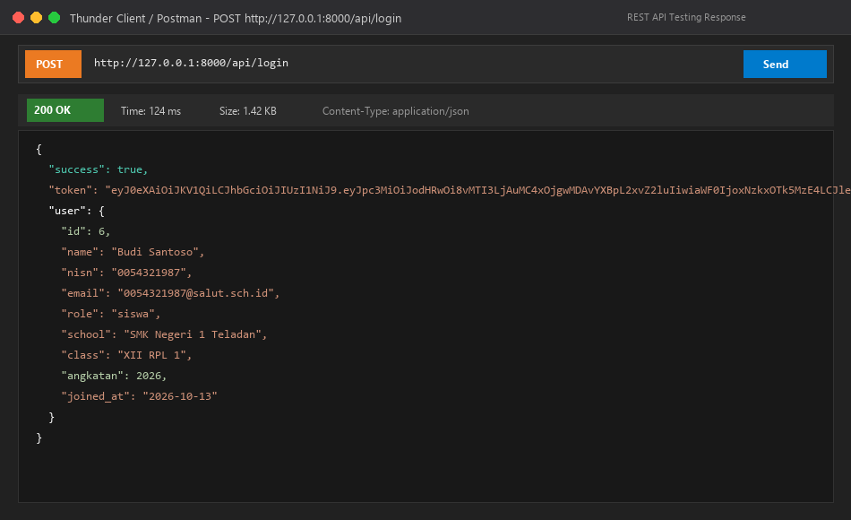
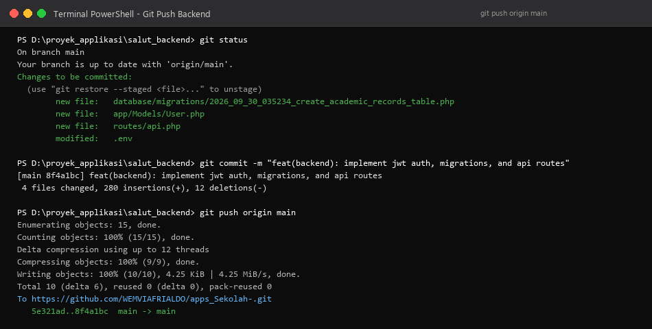
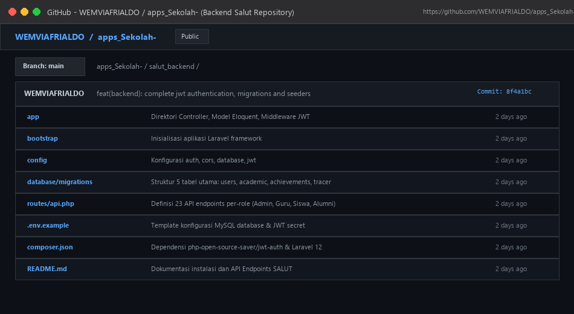

Tahap awal pengembangan difokuskan pada penyiapan arsitektur server menggunakan framework PHP Laravel versi 12. Konfigurasi utama dilakukan pada file environment (.env) untuk menghubungkan backend dengan basis data relasional MySQL (db_salut). Konfigurasi ini memastikan server dapat melakukan operasi Create, Read, Update, Delete (CRUD) secara terenkripsi dan andal.

Untuk mengakomodasi kebutuhan tata kelola data sekolah menengah kejuruan (SMK) yang dinamis, dirancang skema database menggunakan fitur Database Migrations Laravel. Skema mencakup tabel users (multi-role: Admin, Guru, Siswa, Alumni), student_profiles, academic_records, achievements, tracer_studies, dan graduation_schedules. Seluruh tabel direpresentasikan dalam Model Eloquent dengan relasi one-to-many dan one-to-one yang kokoh.


Sistem SALUT mengusung arsitektur Client-Server murni, di mana pertukaran data antara aplikasi mobile, web admin, dan server dijembatani oleh RESTful API. Untuk menjamin otorisasi yang aman tanpa state sesi (stateless), diimplementasikan JSON Web Token (JWT) menggunakan paket php-open-source-saver/jwt-auth. Rute login publik memverifikasi NISN dan kata sandi, lalu menerbitkan Bearer Token yang wajib disertakan pada setiap request menuju rute terproteksi middleware jwt.auth.

Sebelum diintegrasikan ke antarmuka aplikasi Flutter, seluruh endpoint API diuji secara menyeluruh menggunakan API Client. Pengujian fungsional pada endpoint otentikasi POST /api/login dengan parameter NISN dan password berhasil mengembalikan respons HTTP Status 200 OK beserta payload token JWT yang valid dan objek informasi profil pengguna.

Sebagai bagian dari praktik rekayasa perangkat lunak standar industri, seluruh kode backend dan konfigurasi database didokumentasikan menggunakan version control system Git dan disinkronisasikan ke repositori GitHub WEMVIAFRIALDO/apps_Sekolah-. Hal ini menjamin integritas kode sumber dan rekam jejak perubahan proyek yang transparan.

